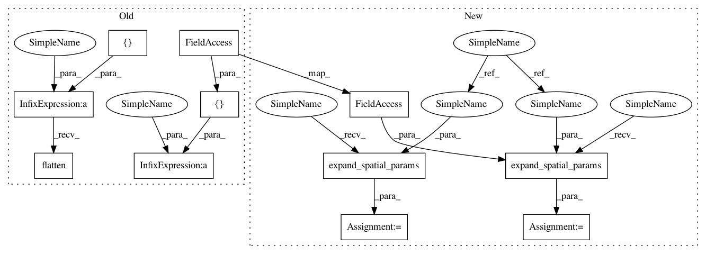

addcb13fb3dcd2cdbc32ac81611a78ac1c19b02f,niftynet/layer/channel_sparse_convolution.py,ChannelSparseConvLayer,layer_op,#ChannelSparseConvLayer#Any#Any#Any#,106
Before Change
spatial_rank = layer_util.infer_spatial_rank(input_tensor)
// initialize conv kernels/strides and then apply
w_full_size = np.vstack((
[self.kernel_size] * spatial_rank,
n_full_input_chns, self.n_output_chns)).flatten()
full_stride = np.vstack((
[self.stride] * spatial_rank)).flatten()
conv_kernel = tf.get_variable(
"w", shape=w_full_size.tolist(),
initializer=self.initializers["w"],
After Change
else:
_output_mask=output_mask
n_full_input_chns = _input_mask.get_shape().as_list()[0]
spatial_rank = layer_util.infer_spatial_rank(input_tensor)
// initialize conv kernels/strides and then apply
w_full_size = layer_util.expand_spatial_params(
self.kernel_size, spatial_rank)
// expand kernel size to include number of features
w_full_size = w_full_size + (n_full_input_chns, self.n_output_chns)
full_stride = layer_util.expand_spatial_params(
self.stride, spatial_rank)
full_dilation = layer_util.expand_spatial_params(
self.dilation, spatial_rank)
conv_kernel = tf.get_variable(
"w", shape=w_full_size,
In pattern: SUPERPATTERN
Frequency: 3
Non-data size: 11
Instances
Project Name: NifTK/NiftyNet
Commit Name: addcb13fb3dcd2cdbc32ac81611a78ac1c19b02f
Time: 2017-08-23
Author: egibson@cs.ucl.ac.uk
File Name: niftynet/layer/channel_sparse_convolution.py
Class Name: ChannelSparseConvLayer
Method Name: layer_op
Project Name: NifTK/NiftyNet
Commit Name: 863a9dcee691e850e79d97a16abb977e24324fa1
Time: 2017-07-17
Author: wenqi.li@ucl.ac.uk
File Name: niftynet/layer/downsample.py
Class Name: DownSampleLayer
Method Name: layer_op
Project Name: NifTK/NiftyNet
Commit Name: 863a9dcee691e850e79d97a16abb977e24324fa1
Time: 2017-07-17
Author: wenqi.li@ucl.ac.uk
File Name: niftynet/layer/convolution.py
Class Name: ConvLayer
Method Name: layer_op